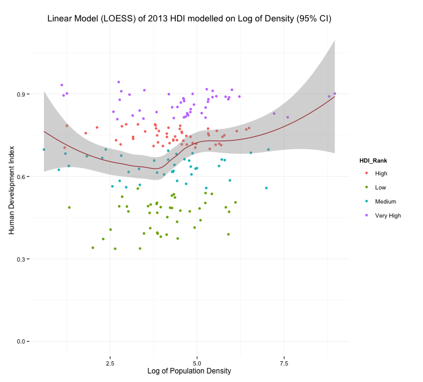
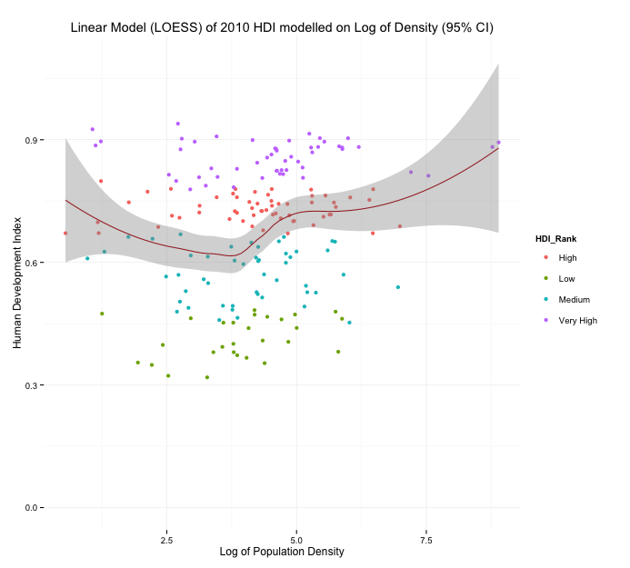
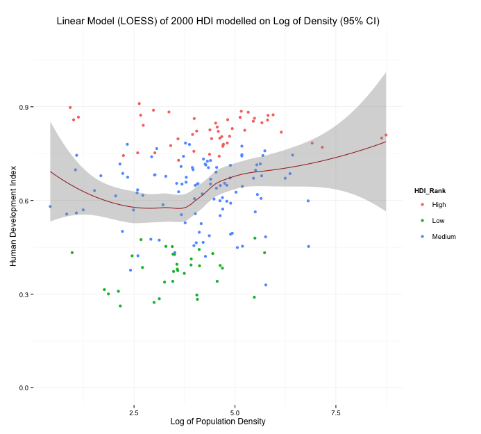
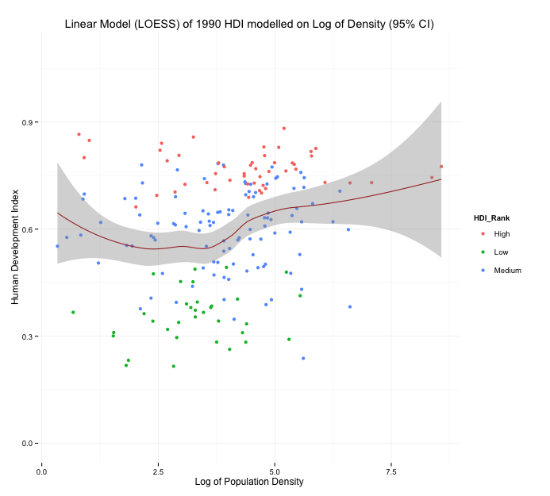
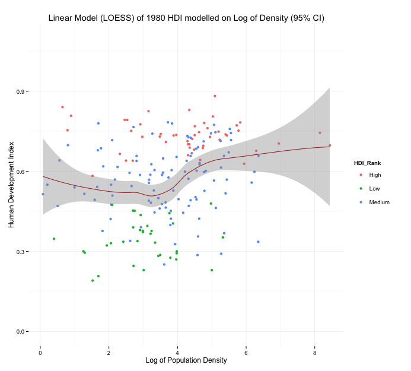

The United Nations Development Program (UNDP) publishes a composite measure of achievement (the Human Development Index – HDI) that is based on three important dimensions associated with human development. Namely, achieving a decent standard of living, having access to knowledge (i.e. education and learning) and leading a long and healthy life.
This project (for IS608) provides an interactive visualization of HDI changes over time. As the HDI measurement does not link explicitly to population density numbers (number of people per square kilometer), we'll investigate the dynamics between population density and HDI rankings over time. The latter is a relevant current issue with recent media reports referencing how certain countries like the Philippines may be undermining their ability to achieve higher economic wealth due to massive strains from population growth. The UN has also warned of heighten food insecurity as we edge toward a global population of 9 billion by mid century while others debate the issue.
Select the year of interest:
The first visualization is a scatter plot of the population density (log scale) of a given country and its HDI score. I’ve deliberately tied the colour coding on each data point to the country’s 2013 HDI rank. This enables one to view how the country’s rank and population has either grown, decayed or remain stagnate. Simply select the year of interest to see how a country’s data has changed. A simple tooltip allows the user to identify the country with any given point.
It is unlikely that population density in and of itself will factor in a significant manner for influencing HDI. However, this work aimed to provide some understanding of this variable’s dynamics with the HDI ratings. It may set the scene for more exploratory analysis with other variables in time. The exploratory analysis was performed in R to investigate if any relationship exists (see Methodology section for the link to the exploratory analysis). Some of the LOESS regression images appear to indicate that as population density increases, we can observer a decline in the HDI ranking until a certain point is reached. At that point it looks like HDI ranking actually increase before plateauing (recognize that Singapore and Hong Kong are may be viewed as outliers however). This trend was repeated for each specific year (note prior to 2010, the UN used a three point scale before moving to the current point ranking scale).
One may speculate that as population growth initially increases, limited resources/wealth are shared among a larger population implying less to go around (i.e. pressures that reduce HDI scores). At a certain point, the population growth may more positively influence income levels by creation of larger consumer markets, more opportunities for gathering greater tax revenues that support public goods (improving quality of life) et cetera, all of which may more positively influence the HDI scores.
    Given the spatial nature of the data, the D3 visualization portrays the overall HDI rankings using a map for 2013 data. The data behind this combined UNDP HDI data and population data (see Methodology and Data Sources). A more intricate tool tip is provided. By placing the mouse over a given country, more information on each country is provided
2013 HDI Ranking
This project uses population density figures and HDI ratings for all 187 countries that are included as part of the most recent (2014) UNDP HDI data. The UNDP 2014 Human Development Index dataset can be downloaded from this location.
Population density information is not included in the HDI data set and instead was scraped from a website listing United Nations Department of Economic and Social Affairs, Population Division data. The first web page scraped contained information on each countries land mass and 2013 population estimates. The web page can be found here. The second web page scraped had important information on past population numbers that I used (namely 1980, 1990, 2000, 2010). The page can be found here.
Ther scatter plot and map visualizations were created used D3. Data was aquired and cleaning using Python. A link for the Python code used is listed here: iPython Notebook
.The explorartory analysis was performed in R which also created a number of CSV files that were used in D3 for the vizualization effort. A link to the code is here: R Markdown
.